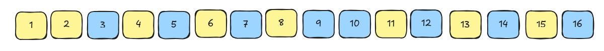

Um algoritmo que ordena construindo uma montanha — uma subida ⬈ colada a uma descida ⬊ — e depois a desmonta em uma sequência ordenada, com comparações sempre fixas.
Merge Sort e Quick Sort são ótimos em um processador só, uma operação após a outra. O Bitonic Sort resolve outra pergunta: como ordenar milhares de números ao mesmo tempo?
Uma sequência é bitônica quando ela sobe e depois desce. Pense numa montanha: subida, pico, descida. Todo o algoritmo gira em torno de um truque que ordena montanhas muito rápido.
…então a gente constrói. Ordene a primeira metade crescente ⬈, a segunda decrescente ⬊, junte as duas — e você tem uma montanha pronta para o merge.
Dada uma montanha [3, 4, 8, 6], o merge compara posições parceiras e vai reduzindo a distância pela metade até tudo ficar ordenado. Veja as quatro fotos da mesma sequência:
Oito valores nos fios [3, 7, 4, 8, 6, 2, 1, 5]. Cada par mostra ⇄ troca ou = mantém antes de mover.
Escaneie o QR code para entrar no Excalidraw colaborativo e acompanhar o exemplo de 16 elementos desenhado passo a passo — as próximas telas — em tempo real, no seu próprio dispositivo.
excalidraw.com/#room=e7f84035f4c220e717a7,lLfjvPdDTa-a5rNtgl7t_QApós as 10 etapas, os 16 elementos ficam totalmente ordenados, do menor ao maior.

Dados exatos do guia. As faixas coloridas mostram os blocos (⬈/⬊), os arcos ligam os pares comparados na etapa, e as barras que mudaram ficam destacadas.
| Métrica | Bitonic Sort | Merge Sort |
|---|---|---|
| Comparações (1 processador) | O(n log²n) | O(n log n) |
| Padrão de acesso | Fixo e previsível | Depende dos dados |
| Espaço extra | O(1) | O(n) |
| Tempo paralelo | O(log²n) | Limitado |
O ponto de entrada chama bitonicSort, que se divide recursivamente e termina no bitonicMerge. Só o compAndSwap mexe nos números.
Na rede (slides 6 e 7), toda etapa é definida por um par (K, J):
Dobra a cada fase. É o trecho que está virando montanha.
Começa em K/2 e cai pela metade até 1. É a distância entre os parceiros.
k do código Java: lá k = cnt/2 é só
"metade do trecho atual" — não é o tamanho do bloco K da rede. Nomes iguais, ideias diferentes.Constrói a montanha: ordena a 1ª metade crescente (1), a 2ª decrescente (0), e então chama o merge no trecho inteiro.
arrparâmetro · o vetorlowparâmetro · início do trecho atualcntparâmetro · tamanho do trecho atualdirectionparâmetro · sentido desejado deste trechok = cnt/2variável local · ponto onde o trecho se divide em duas metades1 / 0valores fixos · direção de cada metade: 1ª crescente · 2ª decrescenteRecebe uma sequência que já é uma montanha e a deixa ordenada, reduzindo a distância pela metade a cada nível.
arrparâmetro · o vetorlowparâmetro · índice onde este trecho começacntparâmetro · tamanho do trecho (sempre potência de 2)directionparâmetro · sentido final: 1 ⬈ ou 0 ⬊k = cnt/2variável local · metade do trecho → o parceiro de i está em i + kivariável do laço · percorre a 1ª metade, de low a low+k-1i com i+k em toda a metade, depois
chama a si mesmo nas duas metades (montanhas menores) até sobrar 1 elemento.O tijolo mais básico: compara duas posições e troca só se estiverem fora da ordem desejada. É a única parte que realmente mexe nos números.
arrparâmetro · o vetor sendo ordenado a troca é feita nele mesmo, sem criar cópia (in-place)iparâmetro · posição do primeiro elementojparâmetro · posição do segundo (o parceiro de i)directionparâmetro · sentido desejado: 1 = crescente ⬈ · 0 = decrescente ⬊tempvariável local · guarda um valor durante a troca, para nenhum dos dois se perderarr[i] > arr[j];
decrescente troca quando arr[i] < arr[j].Constrói uma sequência que sobe-e-desce e a desmonta em ordem — com comparações fixas, perfeitas para paralelismo.